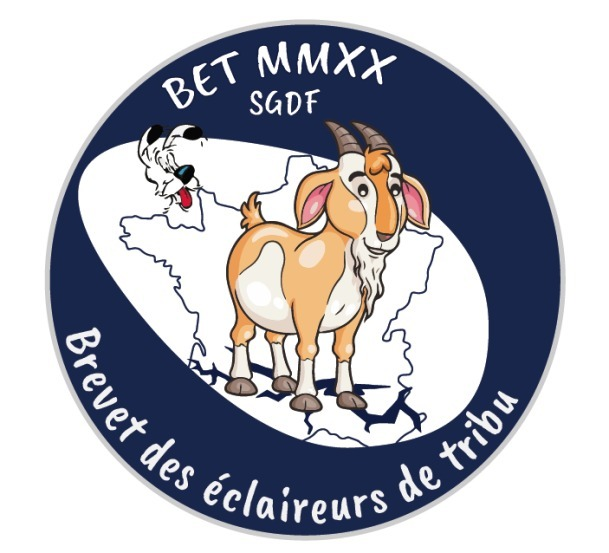

<div class="container">
    <div class="jumbotron">
        <center>
            <h1>Panoramix est en danger!</h1>
            <h2>Une aventure dont VOUS êtes le héros!</h2>
            <!--  -->
			<p>22- Tu acceptes volontiers son offre, ton âme de druide te pousse à faire confiance à cet homme, même si son entourage ne ferait qu'une bouchée de toi en temps normal. Il était connu de tous désormais, après dix années de guerre, que les druides étaient le cœur de la révolte gauloise. Enfin, les romains disaient révolte, comme si les gaulois étaient déjà des romains qui se rebellaient. Alors que pour les gaulois, ils étaient la résistance face à l'envahisseur, les défenseurs de leur nation. « Alors, vous allez à Condate... » lança le légat pendant que vous gravissiez la colline qui menait à sa demeure. « Oui, je vais voir un vieil ami, je n'ai plus de nouvelles de lui, comme il est assez âgé, je me demande si... ». « Ah oui, nous sommes tous égaux face à la mort, il n'y a plus de romains, gaulois, goths, pictes... qui tiennent devant la faucheuse éternelle. Je ne me suis pas présenté, je suis le légat Ipsofactus, en fait je ne suis plus légat car j'ai pris ma retraite après dix ans de bons et loyaux services envers l'empereur. Normalement c'est vingt années, mais puisque j'étais... enfin la conquête de la Gaule... c'était sur le front, les années valent doubles. » « Oui, je connais le système de calcul » répondis-tu, « j'ai vécu à Aix pendant quelques années dans ma jeunesse, les romains y étaient déjà nombreux à l'époque. C'était avant, avant... tout ça » fis-tu de la main, en montrant le vide autour de toi, sans oser prononcer le mot massacre. « Je comprends, j'ai moi-même été dégoûté de tout cela. L'armée a chassé des tribus pour me donner ses terres, je les ai toutes fait revenir en leur proposant des postes dans ma maison. J'ai besoin de paysans, d'éleveurs, de couturières, de tanneurs, de pêcheurs... La moitié presque est revenue, l'autre s'est fondue en une seule tribu et a rejoint le centre des massifs rocheux. La guerre n'est pas finie pour eux ». « Oui j'en ai entendu parler, leur chef se nomme Vercingétorix, ils... je ne viens pas de leur tribu ». « Ah oui ? » s'enquit un légionnaire soupçonneux. « T'es de quelle tribu alors ? ». Le piège était gros comme une maison, de nombreuses tribus s'étaient vues confisquées leurs symboles, elles avaient été dissoutes de force par l'autorité romaine. En un mot tu pouvais passer de vie à trépas. Mais pour qui se prenait-il ce romain, à décider qui avait le droit d'être fier ou non, de sa tribu.</p>
        </center>
        <center>
            <a class="btn btn-primary" style="width:30%" href="/aventure/26" role="button">Donner le nom d'une tribu bannie et ne pas s'écraser</a>
            <a class="btn btn-primary" style="width:30%" href="/aventure/16" role="button">Donner le nom de ta tribu, en paix avec les romains</a>
			<a class="btn btn-primary" style="width:30%" href="/aventure/32" role="button">Essayer d'éluder la question</a>
        </center>
    </div>
</div>